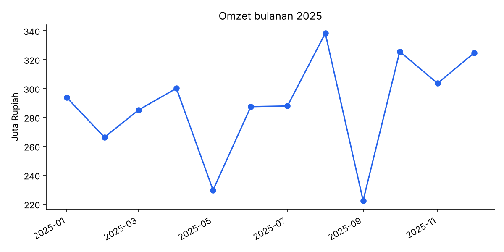

Analisis penjualan retail 2025
Membersihkan 3.000 transaksi (duplikat, nilai kosong, penulisan kota yang tidak seragam), lalu menghitung KPI dan membandingkan omzet per kategori dan kota.
Elektronik menyumbang sekitar 66% omzet, dan Jakarta adalah kota terbesar dengan sekitar 33%.
Data sintetis, dibuat dengan skrip agar hasilnya bisa direproduksi.
- Python
- pandas
- Matplotlib